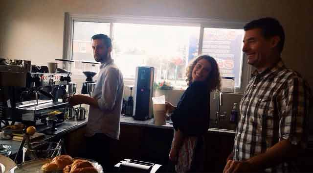

Now Open Friday and Saturday Nights
Our beer menu will update week to week and we offer a small but well curated selection of red and white wines!
About Us
Small local coffee shop located in the heart of Stittsville. Owned by Kathleen Edwards, a former musician who quit the music industry to re-discover her happiness. This shop is otherwise known as the happiness project
Menu
Drinks
We serve a wide variety of tea, coffee, lattes, iced coffees and much more. Come in and relax with a drink or take it to go!
Eats
Want something sweet? We offer a varitey of sweet treats like brownies, cookies and scones. We also have three different types of sandwhichs you can enjoy all day long.
Contact Us
1523 Stittsville Main St.
Mon - Thu: 7:00 am - 5:00 pm
Fri: 7:00 am - 11:00 pm
Sat - Sun:8:00 am - 5:00 pm